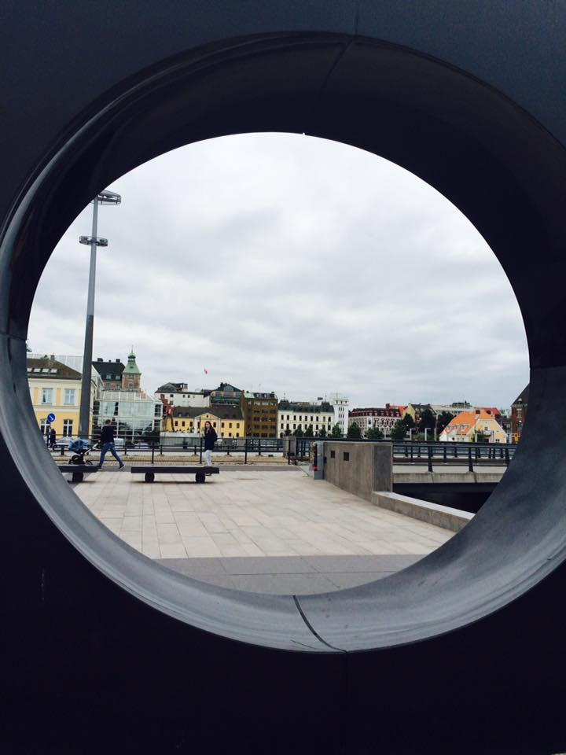

I take pictures of everything and drive my partner Steve mad when we're on holiday.
I love flowers, bugs, textures, landscapes...you name it and I'll snap it.
I particularly like to take pictures of manhole covers and architectural ironwork.
My photography is also used as my inspiration board for jewellery making.
I'll let you into a secret...I can't draw for toffee!
For me abstract or organic form is the way to go.
Below are three of my photographs:
I 💟 photography...

Handmade Studs

Malmo in Sweden

Succulent Plant
My Favourite Places to Visit
- Copenhagen
- Marrakesh
- Iceland & it's attractions...
- Reykjavik
- The Secret Lagoon
- Gullfoss Waterfall
- Lisbon
- Sicily